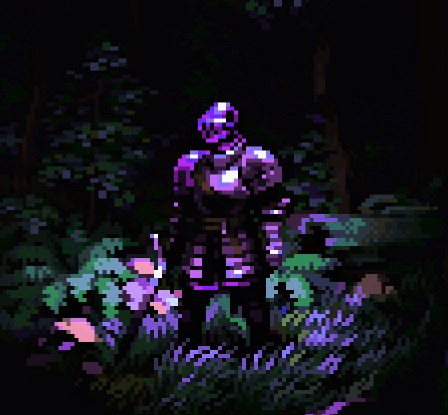

WELCOME TO THE CRYPT

Welcome to my website/portfolio. Inspired for my love of video games and older sites. It will continue to be updated as I search for a job.
I am an aspriring programmer looking for his first break in the industry. If you know of any opportunities let me know!
Things about me:
- Currently living in Salt Lake City.
- My main programming language is Javascript(learning Typescript).
- I am a former Air Traffic Controller.
- I love traveling and making stained glass windows.
- I hate tomatoes.
- I am a dual US/UK citizen.
- I spend most of my time either on my computer or learning new things.
- My favorite food are french fries.
PROJECTS
☪ The Catacombs
The very site you are on right now! Made as a little test of basic HTML and CSS skills. Much inspiration was taken from DimDen
☪ Does It Go
A full stack PERN database app that displays weather conditions for multiple paragliding launch points on one page. This eliminates the need to hop to several different forecasts to find a flyable launch.